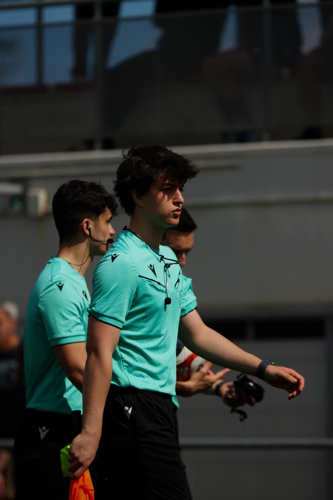

Sobre este proyecto

¡Hola! Bienvenidos a mi sitio web personal dedicado al mundo del arbitraje futbolístico. Tras completar mi primer año como colegiado en la Federación Vizcaína de Fútbol (FVF-BFF), he creado este espacio para divulgar la labor arbitral y compartir mi día a día sobre el césped.
Muchas veces solo se ven los dos equipos que compiten, pero en cada encuentro hay un tercer equipo indispensable: el equipo arbitral.